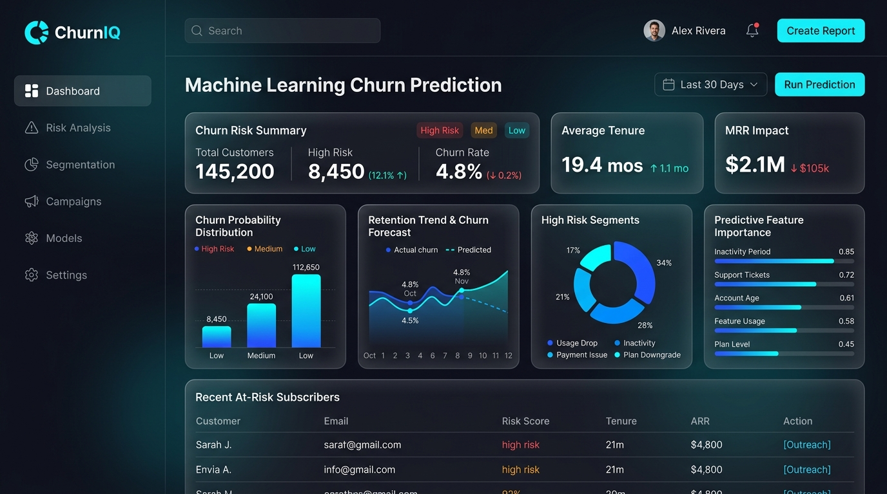
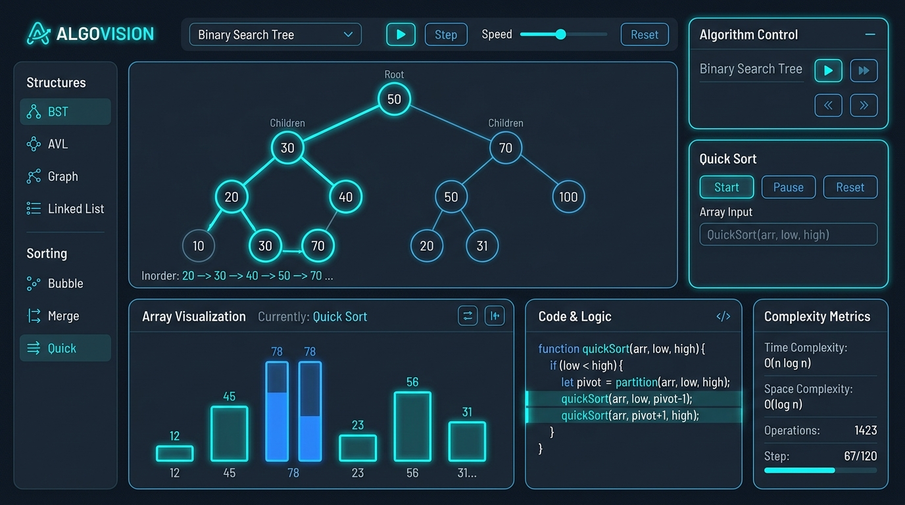
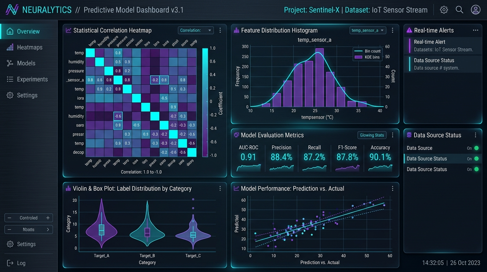

Programming Languages
Algorithmic foundations & system logic
Key Competencies:

Software Engineer & Artificial Intelligence Specialist
Specializing in Machine Learning, predictive modeling, and scalable software solutions. Passionate about solving complex algorithmic challenges and crafting robust, data-driven systems.
Hello! I'm a software engineer and undergraduate student specializing in Artificial Intelligence & Machine Learning. I'm passionate about solving algorithmic puzzles, designing machine learning models, and building clean, responsive web software.
My focus is on turning theoretical concepts into reliable applications. Whether implementing classification algorithms, tuning hyperparameters, practicing data structures in Java and Python, or collaborating through Git, I enjoy crafting robust solutions.
A comprehensive breakdown of core software engineering and machine learning competencies, featuring proficiency metrics, progress indicators, and key applied skills.
Algorithmic foundations & system logic
Predictive modeling & data intelligence
Production workflows & developer toolchains
A chronological roadmap of key academic achievements, major software and machine learning projects, and practical engineering milestones.
Version Control Workflows: Daily hands-on practice with production Git workflows,
including feature branching, rebasing, pull requests, cherry-picking, and remote collaboration on
GitHub.
DSA Mastery: Continuously solving algorithmic problems across arrays, trees, dynamic
programming, and graphs in Java and Python with a strong focus on space and time complexity optimizations.
End-to-End ML Pipeline: Built and trained predictive classification models utilizing
Logistic Regression and Random Forest algorithms to identify customer attrition risks.
Data Engineering & UI: Cleaned raw data, handled imbalanced distributions, conducted
exploratory analysis, performed hyperparameter tuning, and packaged the solution into a live Streamlit web
application.
Core Implementations: Designed and implemented core data structures (linked lists, binary
search trees, heaps, hash maps) from scratch in Java to deepen internal architectural comprehension.
Complexity Benchmarking: Evaluated empirical execution times against theoretical Big-O
asymptotic limits, ensuring optimal algorithmic performance.
Specialization: Artificial Intelligence & Machine Learning (AIML).
Comprehensive curriculum covering supervised & unsupervised learning, deep learning fundamentals,
neural architectures, relational database management systems, and discrete mathematical modeling.
A showcase of machine learning pipelines, algorithmic frameworks, and data analytics systems. Each project thumbnail is clickable to open a detailed technical view with architectural specs and code.

ML & StreamlitAn end-to-end classification system forecasting customer churn with 90.1% accuracy. Includes exploratory data analysis, feature engineering, Logistic Regression & Random Forest models, and a live Streamlit interface.

Java & AlgorithmsComprehensive repository of 100+ data structures and competitive programming algorithms built in Java. Features custom balanced tree implementations, graph traversals, and empirical Big-O benchmarking suites.

Data Science & VizInteractive analytics engine for high-dimensional dataset profiling. Generates correlation heatmaps, feature distribution plots, outlier detection reports, and multivariate statistical summaries with Pandas and Seaborn.
Perspectives from faculty mentors, engineering peers, and project collaborators on technical problem solving, machine learning execution, and software craftsmanship.
🔬 ML & ResearchSushanth approaches machine learning problems with commendable analytical depth. When engineering the Customer Churn prediction system, his rigor in feature extraction, hyperparameter tuning, and cross-validation was exemplary for an undergraduate engineer.
💻 Systems & DSAWorking alongside Sushanth on complex data structure optimizations was seamless. His grasp of time complexity benchmarking, coupled with disciplined Git workflows and proactive communication, kept our sprints fast and bug-free.
📊 Data AnalyticsSushanth has a great talent for transforming messy datasets into intuitive visual narratives. His exploratory data analysis and Streamlit dashboards provided our project with immediate, actionable insights while maintaining modular code.
🐙 Code QualitySushanth writes clean, predictable code that is a pleasure to review. His Java implementations of custom tree and graph structures adhere strictly to SOLID principles, and he is always eager to optimize asymptotic efficiency.
Interact directly with an AI simulation of Sushanth CD. Ask about machine learning pipelines, algorithmic problem solving, project architecture, or career aspirations.
Have an open engineering role, an ML project idea, or a collaborative inquiry? Send a message directly below, and I'll respond within 24 hours.